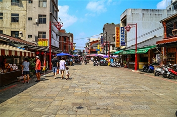

| 609410161 | 鄒宗民 |
|---|
北埔熱門景點


北埔地區四面環山，有著迷人的風情與獨特的美食，多數人來此旅遊，經常是找間茶舖，喝點飲料吃頓飯 ，往一下個景點繼續前進，其實，到北埔旅遊，您可以慢慢行... (繼續閱讀)

北埔冷泉位於北埔鄉外坪村大坪溪，距北埔市區約7公里，車程約20分鐘，冷泉為為罕見的碳酸與硫磺共生泉 ，泉水帶些鹹味，水色則為淺黃色，前往北埔冷泉的途中，眼前盡是滿滿的綠意...(繼續閱讀)